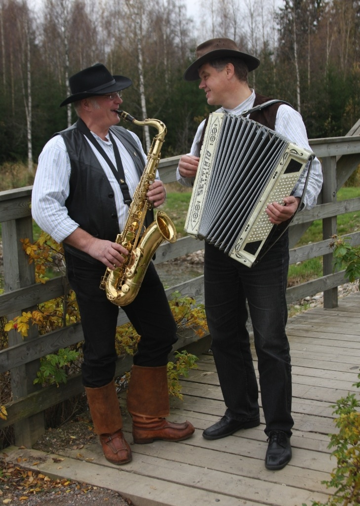
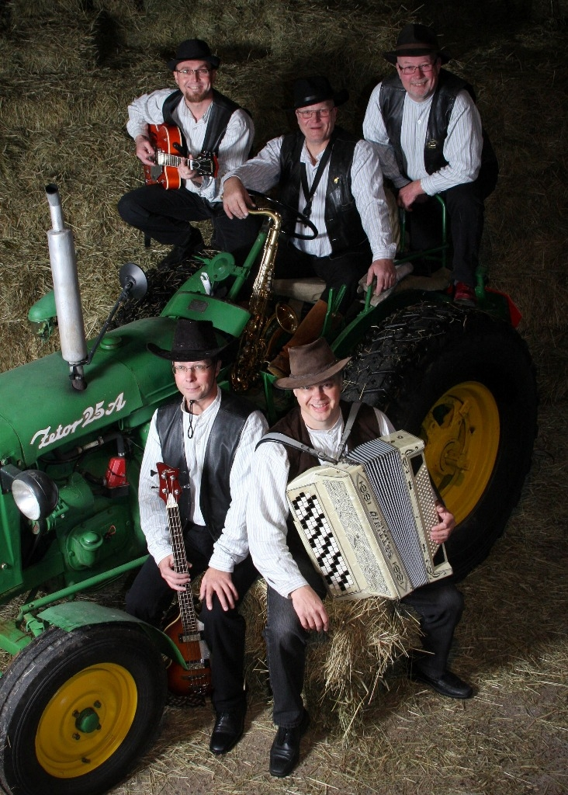

Jari ja Taika on täyden palvelun tanssiorkesteri ja viiden mukavan muusikon yhtye, joka tuo vauhtia ja viihdykettä juhliisi. Keikkailemme kaikkialla Etelä- ja Länsi-Suomessa Humppilasta käsin. Laajasta ohjelmistosta löytyvät esimerkiksi ikivihreät jazzklassikot vuosien varrelta, suomipop-suosikit, päivän iskelmät sekä muutama oma sävellyskin. Meillä rytmi on veressä ja yleisön viihdyttäminen sydämen asiana.
Keikkailemme pääasiassa Turku-Tampere-Helsinki -akselilla, mutta kannattaa kysyä tanssiorkesteriamme keikalle kauemmaskin. Iloinen ja tarttuva meininkimme toimii pohjoisemmassakin. Ota yhteyttä ja pyydä tarjous keikasta.
Tarjoamme valmiina 16 settivaihtoehtoa, joiden joukossa on sekä menevämpiä tanssipotpureita, että rauhallisempiin tilaisuuksiin taustamusiikiksi soveltuvia settejä. Pyrimme vastaamaan mahdollisimman hyvin asiakkaan toiveisiin ohjelmiston osalta, joten neuvotellaan extrakappaleista tarpeen mukaan. Valmiiden esimerkkien joukosta on helppo poimia omaa makua ja haluttua tunnelmaa vastaava setti.
Ota yhteyttä »